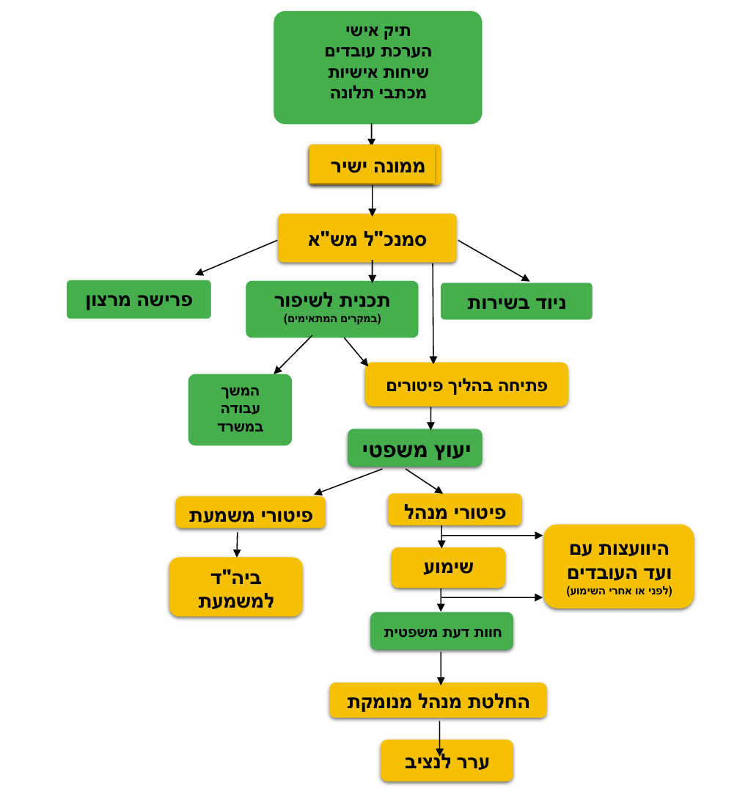

כשאין מנוס מסיום העסקה חשוב להפריד בין מצבים שונים:
פיטורים בתקופת הניסיון פשוטים יותר מפיטורי עובד קבוע - אינם דורשים את מלוא ההליך המפורט למטה.
פיטורים עקב התנהגות פסולה - מבוססים על עבירת משמעת [כהגדרתה בחוק שירות המדינה (משמעת), התשכ"ג-1963.] הסמכות לפיטורים בידי בית המשפט לענייני עבודה.
פיטורים עקב כשל תפקודי מתמשך - דורש תשתית ראייתית לחוסר שביעות רצון ממקורות שונים ולאורך תקופה משמעותית.
סיכום עם העובד על הסדר פרישה מרצון.
ניתן להעביר עובד למשרה אחרת באותה הרמה (עד רמה מתחת בהסכמה או אישור הנציבות) (תקשי"ר 11.23).
